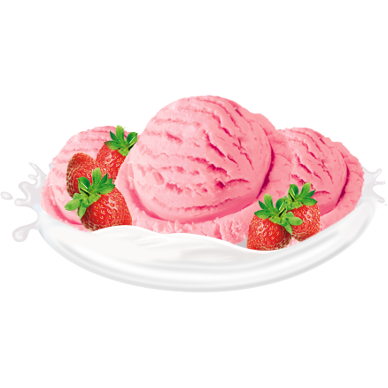

A sobremesa feita com sorvete com um sabor simples e encantador 🤤
A massa de sorvete do Sundae,multiplos sabores!
Massa de Morango 🍓
O sorvete em massa sabor morango é uma delícia com um gosto predominante de morango, apresentando uma cor rosa ou vermelha vibrante. Sua textura é suave e cremosa, graças aos ingredientes básicos como leite, açúcar, creme e morangos. Alguns podem incluir pedaços reais de morango para adicionar textura. O sabor varia, sendo alguns mais suaves e outros mais intensos. É uma escolha popular, encontrada em supermercados e sorveterias.

Massa de Chocolate 🍫
O sorvete em massa sabor chocolate é uma delícia conhecida por seu gosto rico e cremoso. Feito com ingredientes de qualidade, como leite, creme e cacau, ele tem uma textura suave e um sabor profundo. Algumas versões incluem pedaços de chocolate para tornar a experiência mais interessante. Pode ser desfrutado sozinho ou com coberturas variadas, como calda de chocolate ou nozes. É uma escolha popular em todo o mundo, sendo apreciado por pessoas de todas as idades.
Massa de Creme/Baunilha 🍦
O sorvete de baunilha é conhecido por seu sabor suave e delicado, com uma cor creme ou bege clara. Sua textura é cremosa, resultado da incorporação de ar durante o processo de fabricação. Feito com ingredientes como leite, creme, açúcar e extrato de baunilha, é uma escolha versátil que pode ser apreciada sozinha ou combinada com diversos toppings. Popular em todo o mundo, o sorvete de baunilha é um clássico associado à tradição, sendo usado como base para diversas sobremesas.